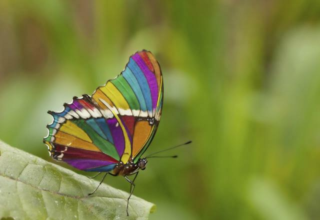
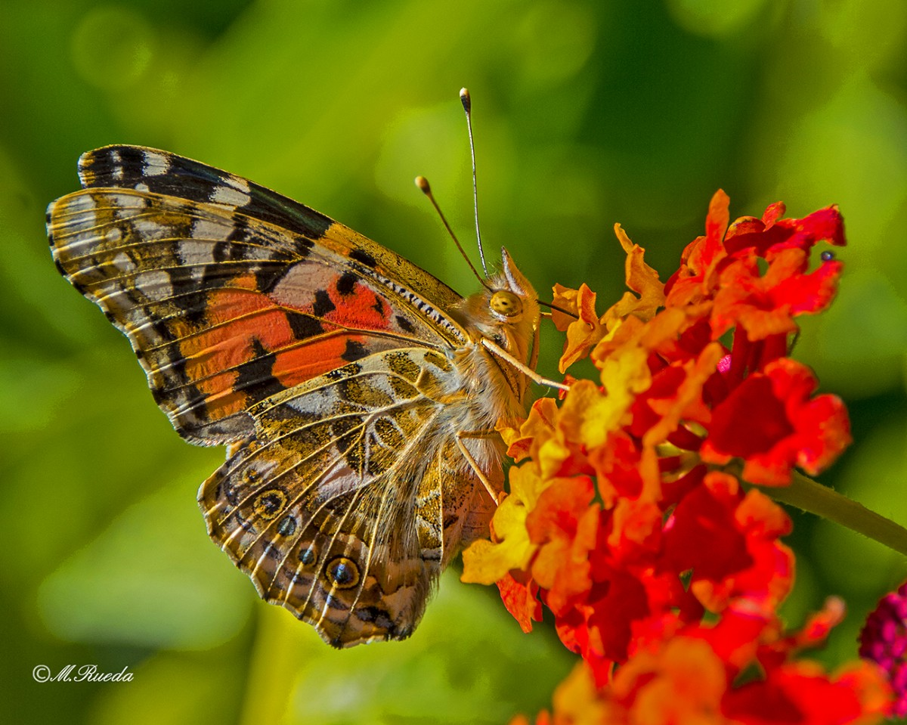

Las mariposas diurnas forman un amplio grupo de lepidópteros y son altamente especializados.Generalmente se reconocen por sus colores brillantes y sus peculiares antenas que son finas y filamentosas en forma de bastoncillo, aunque también por su posición de descanso, con las alas verticales y juntas
Las polillas son tan diversas que es difícil conocer todas las características, por esos motivos podemos decir solo algunas. La mayoría vuelan de noche y tienen colores apagados, también hay especies que vuelan de día, cuyos colores rivalizan con los de las diurnas más bellas.Las polillas, suelen distinguirse por sus antenas plumosas o filamentosas, sin pero tenerlas en forma de bastoncillo como las diurnas. Como hemos dicho anteriormente las mariposas suelen acoplar sus alas cuando vuelan mientras que durante el reposo, las juntan. En cambio las polillas las cierran hacia abajo pegadas al cuerpo quedando ocultas las alas traseras bajo las alas delanteras. Otra diferencia está en el cuerpo, ya que las mariposas presentan un cuerpo más esbelto en comparación a las polillas que es más ancho.
El siglo vital de las mariposas se lleva a cabo en 4 pasos:
- Fase huevo
- Fase larva(oruga)
- Fase crisálida
- Fase adulta

En esta fase, la larva seleccionará la hoja adecuada para poder empezar a poner sus huevos.La selección de la hoja juega un papel muy importante porque es la hoja que puede comer.Las orugas necesitan comer rápido para poder crecer cuanto antes y empezar a expandirse.Su exoesqueleto no se estira sino que la expansión se verifica a través de la muda.

En esta fase la vida de la oruga (larva) puede durar desde un 1 mes hasta unos 3 años. Al final de este proceso se convierte en crisálida. La crisálida es la sede de las trasformaciones más radicales y profundas; la cual puede permanecer libre en el suelo o puede estar suspendida en una hoja gracias a sus ganchos de seda.
Algunas especies están protegidas por unas redes de hilos de sedas, producidos por la larva. Durante la metamorfosis en el interior de la crisálida se llevan a cabo muchos cambios que llevan a la formación del adulto. Todo depende de la acción combinada de hormonas y enzimas. En la cabeza de la larva se encuentran algunas glándulas: producen una hormona especial, la hormona juvenil que mantiene inalteradas las características anatómicas y fisiológicas de la larva durante la metamorfosis, inhibiendo a las del adulto.
La disminución de la hormona juvenil determina el fin de la vida larval y la aparición de la crisálida. En este momento las enzimas empiezan a destruir las viejas telas transformándolas en reservas energéticas.

Algunas mariposas ponen sus huevos en el haz de las hojas. Así de este modo se asegurarán una fuente de alimento para sus huevos. La hembra suele pegar sus huevos en la superficie de una hoja o a un soporte similar, con una secreción viscosa de su cuerpo.

Estos son algunos ejemplos de mariposas que existen y sus caracteristicas que las definen a cada una:
| NOMBRE | IMAGEN | CARACTERISTICAS |
|---|---|---|
|
|
Existen decenas de miles de especies de mariposas en el mundo, una de las más bellas son las mariposas morpho azules, muy buscadas por coleccionistas y personas en general que desean admirar el maravilloso color de sus cuerpos. | |
|  | La mariposa Vanesa de los cardos se caracteriza por ser la más distribuida alrededor del mundo y se conoce a menudo como la mariposa cardo o la cosmopolita debido a que su hábitat se extiende desde América del Norte y del Sur, Europa, Asia hasta África. | |
|
|
La mariposa Alas de Pájaro es la más grande de las mariposas en el mundo, con una envergadura de hasta 30 cm de ancho. Esta mariposa exótica proviene de un bosque tropical de tierras costeras bajas de Nueva Guinea. Se encuentra en la Lista de Especies en Peligro de EE.UU. ya que su hábitat está siendo reducido a medida que van aumentando las plantaciones de palma de aceite. | |
 |
La mariposa tigre es una fuerte voladora que posee marcas distintivas en forma de rayas amarillas y negras en las alas y el cuerpo. Algunas hembras son de color marrón o negro, imitando a la mariposa tigre. | |
|
|
La mariposa Ulises es también conocida como la mariposa azul de montaña, el emperador azul y mariposa golondrina azul. Se trata de una espectacular mariposa australiana de colores azul y negro brillantes. | |
|
|
La mariposa cebra es una mariposa común con marcas distintivas en blanco y negro, de cola alargada en sus alas posteriores, con algunas pequeñas marcas rojas y azules en la parte posterior de las alas y márgenes fuertemente ondulados. |
Estos son algunos videos con relación a las caracteristicas, especies e importancia de las mariposas
| Características e Importancia | Especies |
|---|---|
|
|
|